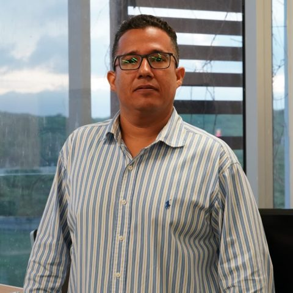
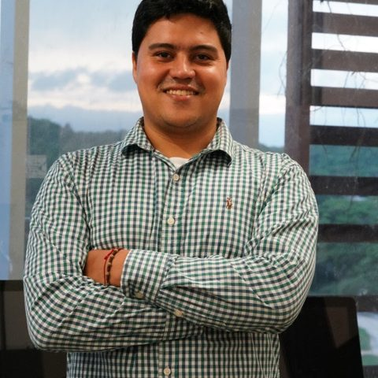
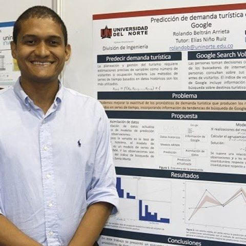
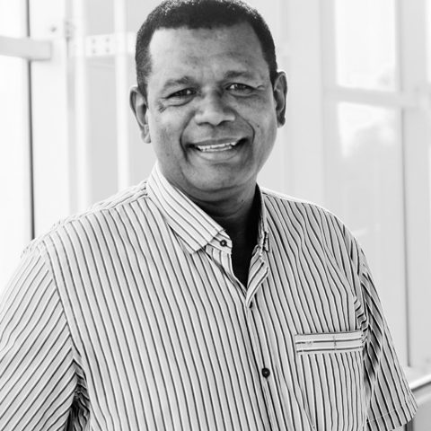
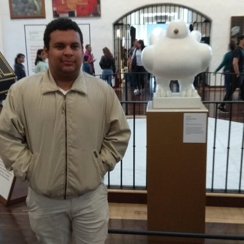

The director, current students and everyone who has been part of the lab since 2017.

Founded the lab in April 2017. Works on ensemble-based data assimilation, covariance matrix estimation and numerical optimization for atmospheric models.
Master's students working with the group.
M.Sc. in Computer Science · Website
M.Sc. in Computer Science
Former students of the lab and the work they did with us.
M.Sc. in Computer Science · Data assimilation for air-quality estimation · Website
M.Sc. in Computer Science

M.Sc. in Computer Science · 4D-Var for wind energy estimation

M.Sc. in Computer Science · Shrinkage covariance estimation in EnKF

M.Sc. in Computer Science · Adjoint-free 4D-Var

M.Sc. in Computer Science · Non-Gaussian data assimilation

M.Sc. in Computer Science · AMLCS-DA package
M.Sc. in Computer Science · Data-driven weather forecast
M.Sc. in Computer Science · Adaptive localization via Tabu Search
M.Sc. in Computer Science